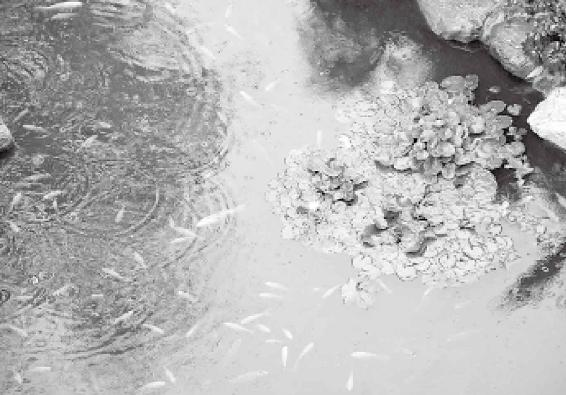
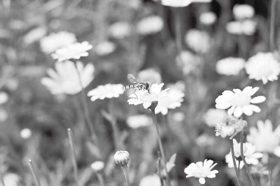
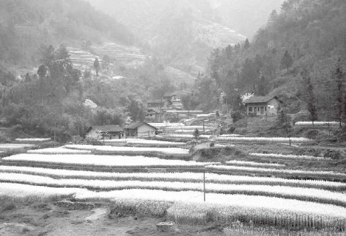
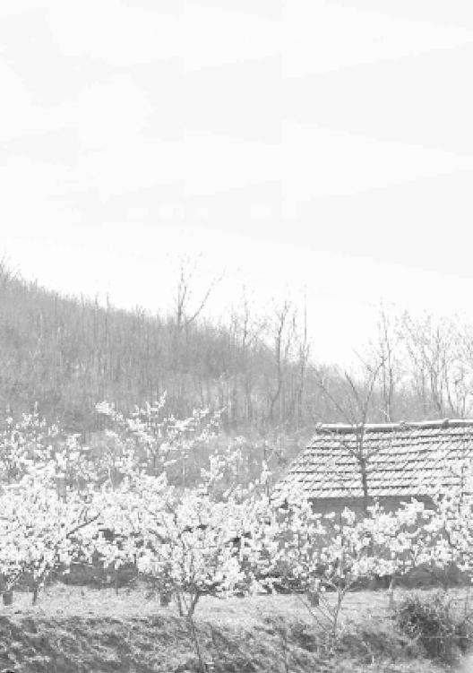
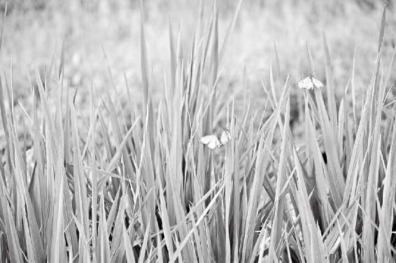

春天是发情的季节。健康的人在发情，不健康的人在发疯。级别不一样，性质也不一样。
春天是老天帮助我们立志的时候，更是我们做事的好时机。
在春天，我们要鼓励生，鼓励长，要温暖，让身、心、灵在这一刻扩展。不要杀生，要多给予，多行善事。
新的一年开始了，绝不要跟自己和别人算旧账，否则会违反天地之气。
经文：
春三月，此谓发陈。天地俱生，万物以荣；夜卧早起，广步于庭，被发缓形，以使志生，生而勿杀，予而勿夺，赏而勿罚，此春气之应，养生之道也；逆之则伤肝，夏为寒变，奉长者少。
梁冬：“春三月，此谓发陈。”请问，春三月是从大年初一开始，还是立春开始？
春三月有六气：立春、雨水、惊蛰、春分、清明、谷雨。
徐文兵：春三月是从立春开始的，因为二十四节气是按照阳历而不是阴历走的，尽管阴阳历上的日期也差不了几天。
按我的了解，研究天文的中国人第一个定的节气就是冬至，那一天太阳日照时间最短，在地上拉的影子也最长，所以古人先把这一天定下来，然后开始数九，一九、二九、三九……所以立春是冬至以后第几天？春打六九头！
中国人第一个定的节气就是冬至。
梁冬：就是说，六九就开春了。
徐文兵：对啊，六九第一天往往就是立春，你看“春雨惊春清谷天，夏满芒夏暑相连，秋处露秋寒霜降，冬雪雪冬小大寒”。冬至完了，一个十五天小寒，三十天大寒，然后再过一个十五天，多少天？
春雨惊春清谷天，夏满芒夏暑相连，秋处露秋寒霜降，冬雪雪冬小大寒。
梁冬：四十五天。
徐文兵：就立春了，你看春打六九头，五九四十五，六九还没开始。
梁冬：六九是头嘛。
徐文兵：所以这一天算立春，往后再数三个月，就一季。三个月九十天，其中包括两个节、六个气。
按照科学的研究，春天什么时候到呢？日平均温度连续五天维持在10℃以上，那才叫立春，这是科学的、理性的认识。可中国人讲究的是慧、感觉，就是说这一天的温度哪怕是在零下30℃，但今天立春了，气就不一样了。
一到立春，不管温度多少，气就不一样了。
梁冬：怎么个不一样法？
徐文兵：太阳不是从冬至那一天开始往回走了吗？它每过十五天，就像经过了一个刻度，到立春这一天的感觉是什么？“天地俱生”、“吹面不寒杨柳风”，意思就是说气温还很低，但那风吹在脸上，绝对已经不是那种凛冽、刀削般的感觉了，是什么风？“生气”！给人一种温暖感觉的风。
为什么现在很多人变得“麻木不仁”？因为丧失了知觉，第一，他不“知”，不知道今天立春了；第二，他感觉不到。因为不觉，所以不知。
梁冬：机会来了！
徐文兵：我们为什么要恢复自己的知觉。现在很多人都丧失了知觉，变得“麻木不仁”了。第一，他不“知”，他不知道今天立春了；第二，他感觉不到。因为不觉，所以不知。
我希望每个人都修炼好自己的身体，把神养得足足的，这时候你会“觉”。哪怕你不看表，也大致知道现在几点了，不看日历就知道现在是什么节气，这就是古人说的“天人合一”。
现在，不少人都把这些事例当寓言来听，觉得是在讲笑话、讲故事，不是！阴阳的变化是存在的，你只有用心神去体会才能感悟到。
把神养得足足的，这时候，大自然的一点一滴变化你都会感觉到。
梁冬：得极其敏感的人才能做到吗？
徐文兵：基本上悟这件事不用太敏感就能感觉到。到立春那天，人的活动、身心变化就应该区别于冬天了。因为这是质的变化啊，不是量的变化。
梁冬：你刚才说悟不需要多敏感就能做到，但我觉得这真的很难，如果你去街上问十个人，有几个知道立春前一天和立春当天的风有什么不一样？肯定很少有。
徐文兵：我以前练太极拳、形意拳的时候，老师就教给我们一些方法。比如，在静坐的时候让我们体会半夜子时（就是阴面变阳面的那个时候）出现的变化。那个时候，一块砖正反面的温度都会有变化。所以，阴阳的变化是需要我们用心神去体会的，不是用那种浅薄、粗鄙、愚钝的意识才能感觉得到。
到立春那天，人的活动、身心变化就应该区别于冬天了。
梁冬：当时你真的体会到砖的变化了吗？还是自我心理暗示？
现在，有几个人知道立春前一天和立春当天的风有什么不一样？
徐文兵：真是有变化。比如老师不告诉你什么时间到子时，他就让你去感觉一个东西，感觉它的阴面、阳面究竟有何不一样。
身体在新生，旧病要发芽
梁冬：“此谓发陈”是什么意思？
徐文兵：冬至过后四十五天，就立春了，这一天往后持续的三个月，我们命名为“春天”，它的性质就是“此谓发陈”。
“发”就是发芽了，生发！这时候，气的趋势是往上走的！就像人长出头发的那种感觉，它是最早变化的。生发不是长出来枝叶，而是涌动出一种气。所以古人放风筝一般什么时候放？
生发不是长出来枝叶，而是涌动出一种气。
梁冬：立春那天放，接地气。
徐文兵：现在，很多中国人都保持着古代的智慧，不愿住高楼，愿意住平房，为什么？接地气。但这点你要跟老外说，老外都笑喷了，他没有那种感觉。
为什么风筝要在春天放？按说春、夏、秋、冬都可以放，天安门广场经常大冬天的时候也有人放风筝。按科学原理来讲，只要有风、有动力，风筝就能飞起来。但在春天，即使没风或是风很小的情况下，风筝也能上天。
为什么风筝要在春天放？
这时候，太阳逐渐在回归，大地呢，慢慢从那种沉寒痼冷的冰冻状态开始回暖，地上开始涌动出一股生气，不断往上走。在这种生气的推动下，植物养了一个冬季的营养（或者说气血），就开始从它的树根往主干上、往枝叶、往末梢上走。走着走着，我们眼看着新的枝芽冒出来，花蕾开始绽放，这就叫“发”。
发于哪儿呢？“发于陈”，“陈”是指过去攒下来的东西，如果没有“陈”，就没有后座力。没有后面的营养支援，你发不了！
“陈”是指过去攒下来的东西，如果没有“陈”，就没有后座力。没有后面的营养支援，你发不了！
像陈皮，很有意思啊！中医有个方子叫“二陈汤”，汤里面必须用两味放了很多年的药，一是半夏，一是陈皮（最好的陈皮是广东新会那边的，非常有名）。
陈皮就是我们用的橘子皮，新鲜的时候不小心滋到眼睛里都觉得有点辣，味儿也很香，但这个味儿是一种浅薄的味儿，保持不了多长时间就散掉了。当你把橘子皮放了很长一段时间以后，如果保存得非常得当，没有让它腐败、霉烂，那它那个时候散发出来的味儿，就非常的芳香，能够醒脾、化痰、去湿，非常有用。
中医里面还有味中药，叫茵陈。我们经常说绿草茵茵，茵就是一种草，刚刚发芽出来的。
这味药为什么叫“茵陈”呢？因为它是一种多年生的草本植物。每年一到春天，它就从陈旧的枝干上冒出一片新的叶子或是一个新芽，然后郁郁葱葱地长成一棵新的草。茵陈也叫茵陈蒿，为什么叫“蒿”呢？因为它长得比较高。
人在冬天一定要养精蓄锐，这样才能把积下的好东西留到春天发。
人在冬天一定要养精蓄锐，这样才能把积下的好东西留到春天发。
所以，“春三月，此谓发陈”的意思，一是说它生发，另外是指它有多年的积累。我们经常说冬天要闭藏，要进补，要养精蓄锐，留到春天干什么呢？不是让你去增加脂肪，提高血脂、血糖浓度，而是留到春天让它去生根、发芽、开花，所以叫发陈。换句话说，如果没有“陈”，你“发”得起来吗？看看我们身边，很多人冬天还在造，到春天他怎么也发不起来。
春三月也是旧病复发的时候，一定要做好防范。
“陈”还有一层含义：我们刚才说的是养精蓄锐，留下的好东西到春天发出来了。另外，如果你攒了很多年的旧病，到春天也该发了，所以，春天也是很多疾病爆发的季节。
梁冬：很多人都以为每年春天的流行性感冒是病毒引起的。
徐文兵：“冬不藏精，春必病温”嘛。很多人在春天会得这种温热性的感冒，它不是伤寒。这种病表现出来的症状是什么？先咳嗽，然后嗓子红肿、热痛，甚至还会出血，心跳加快，心率变快，最后到高烧、昏迷、抽搐，这一系列都是温热病的表现，一到春天开始发了，咋回事？“发陈”。
“冬不藏精，春必病温”。

雨水2月19日前后，“润物细无声”的春雨中，大地一派欣欣向荣的景象，沁人的气息激励着身心。
这种“发陈”，我们叫“伏邪”，在秋冬它就埋伏下来，到了春天，“哗”一下勾起来了。
徐文兵：还有一种病在春天表现得很明显，桃花疯！
梁冬：什么叫“桃花疯”啊？
徐文兵：桃花开的时候，有些人就脱光了满街跑。疯，就是躁狂之类的精神疾病，到春天肝火萌动生发的时候，这种陈年痼疾就发出来了。
春天是发情的季节。健康的人在发情，不健康的人在发疯。级别不一样，性质也不一样。
梁冬：传说中的花痴就是这样吗？
徐文兵：对，春天是发情的季节嘛。健康的人在发情，不健康的人在发疯。
梁冬：级别不一样。
徐文兵：性质也不一样，一个是正常的养精蓄锐，“冬天进补，开春打虎”。
梁冬：挺押韵的。
徐文兵：这是劳动人民的结晶，不是我说的，我哪有那么快的反应啊。还有，春天油菜花开的时候，也是精神病发作的时候，“菜花黄，痴子忙”。“发陈”，这两字蓄含了无穷的哲理。
养精蓄锐，春天就发得好；该攒的时候乱造，开春就会发病，懂得 “发陈”两字，才能亲近养生的智慧。
梁冬：春天旧病复发的时候怎么办呢？
徐文兵：对付旧病复发的一个方法是及早治疗，另外，就是“引蛇出洞”。
梁冬：此话怎讲？
徐文兵：蛇待在洞里不好打吧？所以你要趁着春天“天地俱生”的时候，把它勾引出来，让它露头，然后一下制住它。这也是我们中医治疗的一种方法。
如何对付易复发的旧病？“引蛇出洞”！
梁冬：如果春天的时候暗疮突然飙出来，那应该拍手称快啰？
如果春天人表现出一种莫名的烦躁，易怒、易激惹，这就是旧病冒出来的症状。
徐文兵：中医认为，春天对应的是肝。很多体内有肝火、肝气过旺的人，到春天，他就表现出一种莫名的烦躁，易怒、易激惹，这就是旧病冒出来的症状。这时，我们可以借此机行事，正好去清他的肝火，帮他把肝火平复一下。有些平时胆小怕事，做事优柔寡断，阳痿甚至筋骨比较软的人，正好借着春天这个劲，多吃点辛辣的食物，或者喝点酒，好好滋补肝气。
梁冬：这就叫扶一把，送一程。
治病，一是要看人，另外要结合天时、地利这种有利于人体的环境。
徐文兵：顺着这个升劲，让肝气升起来。所以中医治病，一是要看人，再一个是要结合天时、地利这种有利于人体的环境。
春天是人解放自己的好时机
梁冬：请问“天地俱生”是什么意思？
徐文兵：前面我们讲过了，古人为什么要在春天放风筝？其实，风筝在秋天也可以放，但是秋天那个风是“秋风扫落叶”的风，含有一股肃杀之气，不适合人做户外活动。秋天，人应该开始收敛锋芒，准备贴秋膘过冬了，这会儿你去放风筝，就等于在和天地作对。而我们在春天放风筝，则是顺应天地的生发之气，从冬天闭藏的状态中走出来，这叫“天地俱生”。
秋天放风筝，等于是与天地作对，春天放风筝，则是顺应天地的生发之气。
秋天，阳光渐行渐远，然后地气也开始收敛，邪寒的冷风就要过来了，这不是生气，是一种杀气；到了冬天，地气闭藏，水冰地坼，大地冰冻了，太阳离得远远的，好像在看热闹。这时候除了一些耐寒的松柏外，基本上没有什么生物是有生气的，大多数动物不是冬眠了，就是潜藏在水里面了，不露头。
这时候也不是生气，不是俱生。到夏三月热的时候，万物是一种疯狂的拔节生长，是长，和生不一样，生是萌芽，长是拉长，所以只有春天配得上称萌芽。所以，如果你有好的生机和萌芽，一定要鼓励它复制。如果是那些有病的萌芽，我们必须要把它扼杀在摇篮里。
如果你有好的生机和萌芽，一定要鼓励它复制。如果是那些有病的萌芽，我们必须要把它扼杀在摇篮里。
所以一句“天地俱生”就指出：我们是自然、天地的产物，是天地造化生产出来了，这时候我们要珍惜自己萌动的生机，鼓励它往好的方向走，至于那些病的邪的生机，要早早给它去除。
梁冬： “天地俱生，万物以荣”中，请问：“荣”字怎么解？
徐文兵：“离离原上草，一岁一枯荣。”“荣”的反义词是“枯”，就是枯萎、凋谢了。草木披上了绿装，春风又绿江南岸，这叫“荣”。
“万物以荣”就是说植物从枯萎、凋谢的状态重新回到了绿色的状态，所以我们把春天的颜色定为青。青有绿和蓝这两层意思，但我们一般指绿，比方说“青山碧水”里的“青山”，就是山开始变绿了的意思。另外，这个“万物”还指人。人也是一个物嘛，那动物和人物怎么“荣”呢？我们经常说这个人容光焕发，还譬如说感到很光荣，“荣”到底是什么样一种状态？
每个人年年都有欣欣向荣的时候，一定多珍惜！
梁冬：“荣”就是汗毛都立起来了，像青草一样冒出来的样子。
“荣”就是汗毛都立起来了，像青草一样冒出来的样子。
徐文兵：还真是，秋天是“从革”，是杀戮、剥动物皮的时候。剥动物的皮叫革，制革。到了春天呢，人体上的小小汗毛孔开始开放，脸也开始舒张，人的气血又开始从内脏、肠胃向四肢、头面、身体末梢奔涌，这时候，人就会显得容光焕发。
为什么冬天要进补呢？因为在冬天，人的气血会从表皮收敛到内在。所以在冬天，我们吃点高脂肪、高蛋白等营养丰富的东西，甚至是冻柿子、冻梨、冰棍儿，都能被消化掉。
为什么春天人看上去容光焕发？
春天来了，人的气血和能量就开始往表皮走，这也叫“万物以荣”。这时候，人就开始觉得：“哎哟，厚棉衣有点穿不住了。”这不是气温变了，是啥变了？你内在的气血变了，人本能地从一种收敛闭藏的状态开始“改革开放”了。
立春一到，早睡早起
梁冬：讲完了“万物以荣”，接下来该说到“夜卧早起，广步于庭”。请问：什么叫做“夜卧”？夜到什么地步才叫“夜”？
徐文兵：古代分时辰啊，是按地支来算的，按子、丑、寅、卯那么走。古人还有一个规定作息的方法，就是每个时辰都有个对应，比如“月上柳梢头，人约黄昏后”。黄昏是几点？大概是太阳落山，晚上的五点到七点这段时间。黄昏以后，叫“人定”，“人定”的时间是晚上九点到十一点，意思就是夕阳坠了，洗洗睡吧。
黄昏以后，叫“人定”。
子时之前叫亥时，亥时属猪，这时猪睡得最酣，所以这个时候你还没睡觉的话，中医就会催你：“像猪一样，赶紧睡吧。”另外，在春天或夏天，你可以睡得晚一点。到秋冬，你大概就要早一点了。
梁冬：新闻联播之后，看一集连续剧就睡下了，大概九点的样子。
徐文兵：真正会养生的人是绝对不会点着灯、熬着油在那儿熬夜打电脑、玩游戏的，那是很伤身体的。
什么时候该“夜卧早起”、“早卧晚起”、“晚睡晚起”？这些都是有讲究的。每到一个季节，你就要改变自己的作息时间。比方说，冬天人要“早睡晚起，必待日光”，意思是一定要等太阳出来了再活动，不要去招惹那个邪气。而立春这一天一到，你就该改成早睡了，但是也该早起了。
什么时候该“夜卧早起”、“早卧晚起”、“晚睡晚起”？这些都是有讲究的。
梁冬：很多人春天的夜卧时间没法那么早怎么办？
徐文兵：夜卧那个时间我不干涉你，但是晚起要改成早起。上次我讲了，立春以后万物会有一个质的飞跃。很多网友就说，你要按照气温的变化去衡量季节的变化。我给大家举个例子，有一句谚语叫：“鹰有时候飞得比鸡还低，但它还是鹰。”春天有时候可能出现“倒春寒”，虽然这时气温比冬天还低，但它还是春天，气不一样。
“鹰有时候飞得比鸡还低，但它还是鹰。” 春天有时候可能出现“倒春寒”，但它还是春天，气不一样。
由此，我联想到了西方营养学和中医营养学之间的区别。西方营养学认为：肉跟肉之间只有脂肪含量、蛋白质含量、矿物质含量等的差别。比方说，鸡肉，蛋白质多一点，脂肪少一点；猪肉，脂肪多一点，蛋白质少一点。它只承认有量的差别，但不承认什么啊？质的差别！
西方营养学只承认有量的差别，但不承认质的差别！而中医营养学更关注事物背后的能量。
鸡肉的脂肪含量再低或者再高，它也是热性的，吃多了会让你觉得燥热，躁动不安，让你半夜早早地醒来，甚至是流鼻血。而再“瘦”的猪肉，它也是凉性的。
这就是我们中国人的智慧，它和西方的思维之间差别在哪儿？中医营养学更关注事物背后的能量，也就是我们常说的“气”。春天再冷，但它跟冬天的气不一样了。好人再坏，他做坏事，但还是好人；坏人有时也做点好事，但他就是个坏蛋。所以一定要在本质上去认识事物和人。哪怕咱们做一个好人的尾巴，也别做那坏人的头。
一定要在本质上去认识事物和人。哪怕做一个好人的尾巴，也别做那坏人的头。
梁冬：宁愿做好人的最坏面，不愿意做坏人的最好面。这叫“宁为凤尾，不为鸡头”。
说到“夜卧早起”，所谓“夜卧”，就是说古人在晚上的九点到十一点就要睡觉了，而且十一点就算很晚了。
徐文兵：古人的“早起”，指的是早晨三点到五点，也就是寅时。
古人一般习惯早睡，比如说，前天晚上九点睡觉，到凌晨三点起来，就开始呼吸，吐纳，练功，就起来洗漱，吃早饭了。
我们经常说“点卯”，跟上班打卡一样。“点卯”是几点？五点到七点，这时候，人开始上班了。
男人可能都挺羡慕古代君王“芙蓉帐暖度春宵”，“从此君王不早朝”这事的。实际上，以前好多皇帝挺累的，早早起来就开始坐在太和殿上商量国家大事。
做皇帝其实挺累的。
到春天这个“此谓发陈”的季节之后，我们一定要“夜卧早起”，“早起”就相对于冬天“必待日光”的那个“晚起”。而冬天“晚起”的时间一般都在七点左右。

惊蛰3月5日或6日，这时气温回升较快，渐有春雷萌动，钻到泥土里越冬的小动物被雷震醒后出来活动了。
梁冬：我们都知道晚上睡得晚不太好，但有些人就认为第二天早上晚起一点，就可以把这个时间补上。
晚起绝对不如早睡。
徐文兵：这是非常幼稚的想法，这些人关心的就是量。
梁冬：现在我关心的问题是什么呢？假设我昨天晚上十一点钟就睡了，第二天早上是五点起。那这和我七点起床有什么不一样？
徐文兵：这就要看是什么季节了！
梁冬：比如春天。
徐文兵：俗话说“一年之计在于春，一日之计在于晨”嘛！你早上起来去做事，你这一天就算没白过。如果你那天昏昏睡去了，很容易就耽误事。我经常劝别人不要在晚上熬夜赶稿子，早早起来写完了，你还不累，而且写的质量也很好。
早上起来去做事，你这一天就算没白过。
春天要好好接地气
梁冬：接下来我们来说说“夜卧早起，广步于庭，被发缓形”中的“广步于庭”吧。请问“广步”是什么意思？是不是把脚迈开来走呢？
徐文兵：“广步”的反义词是小细碎步。它包含两方面意思：一是指步幅，再就是指走路的节奏。你迈着大步“呱呱呱”地走，这就不对。“广步”是一种很悠然的，迈着大步子散步的状态。毛主席说的“不管风吹浪打，胜似闲庭信步”大致就是这个意思。
梁冬：那什么叫“庭”？
徐文兵：“庭院深深深几许。”“庭”是什么呀？在农村，我们一般进了门之后，有个影壁挡着，你看不见里面。你只有过了影壁，才能看到空旷的院子。所以，“广步于庭”不是广步于“野”。
“广步于庭”不是广步于“野”。“步”不是跑步。古代人管“跑”叫 “走”！
天气还没有到暖和的时候，你不可能到外边去春游、撒野，就在院子里面散步，还是相对封闭的。而且是要迈着大步，步幅还要和缓。记住！“步”不是跑步。古代人管“跑”叫什么？叫“走”！我们经常说“奔走相告”，这是一种什么样的感觉？就是一边跑着，一边告诉别人。
天气还没有到暖和的时候，你不可能到外边去春游、撒野，就在院子里面散步，还是相对封闭的。而且是要迈着大步，步幅还要和缓。
梁冬：“走”是跑，但“奔”是两腿离地的。以马为例来说，四腿离地是为奔，两腿离地是为跑。
徐文兵：没错！真正的骑马散步叫“走马”。什么叫“走马观花”？就是一种走的状态，而不是蹦。走马是很稳的，不是去跑步，不是让你去做剧烈的运动。在春天，万物刚刚萌芽，刚刚生发，还没到需要剧烈运动的时候。
真正的骑马散步叫“走马”。
梁冬：春天的早上，地气升腾得最厉害，我们一定要好好接地气儿。
徐文兵：我对汉字的很多认识，得益于我把它翻译成了英文。因为汉字有一个特别讨厌的现象，叫“互训”。
春天的早上，地气升腾得最厉害，我们一定要好好接地气儿。
梁冬：比如查一个“贫”字，字典里的解释是“贫者，穷也”。你再去查“穷”字，“穷者，贫也”！
徐文兵：这阻碍了我们去正确地使用自己的语言。还有，把它们翻译成英文时，我就突然觉得意思不一样了。比如说“走狗”这个词，你怎么翻译成英文？“running-dog”！
你把“走狗”翻译成“running-dog”以后，可以想象一下：打猎时你打中了一只鸭子，那狗“蹭蹭蹭”地跑过去，把鸭子给叼回来。你完全可以想象出它那种殷勤、忠实的样子。如果有一个人像“running-dog”一样给你办事的话，那真是个好同志、好部下！
春天头发应解开，穿衣服要宽松
徐文兵：“披发缓形”是这段经文里面最精彩的一句。先说“披发”，这里的“披”字原本应该是被子的“被”，是通假字。在古代，人到成年后都要束发。为什么要束发？
头发，历来是作为人一种心性的、外在的有形代表，我们经常把它称为“三千烦恼丝”。和尚出家剃度了，表示他跟他的亲人、朋友之间的那种复杂社会关系给“咔”的一声剪断了。
“披”是通假字，通被子的“被”。
曹操在行军的时候说：谁把田里面的麦苗踩坏了，就要斩首。结果他的马受惊了，把麦苗踩坏了。怎么办？他不能斩首吧？他就削下自己的头发来——以发代首。“身体发肤，受之父母”，古人把头发看得很重要，把它当成是自己心性的一种流露，是头脑或心神的延伸。所以古代人定情的话，送一个小荷包，里面往往是一缕青丝。
古人把头发看得很重要，把它当成是自己心性的一种流露，是头脑或心神的延伸。
梁冬：一串DNA嘛！另外，校园歌曲经常唱什么，“谁把你的长发盘起……”谁把你的长发盘起来了，你就跟定谁了。这说的也是一种心性。
徐文兵：古人蓄发原本为的是什么？男子八岁，女子七岁，披头散发，黄发垂髫，随便玩儿！等到他们启蒙入学的时候，就开始约束心性，开始束发了。到了弱冠，就要戴一个头冠，把头发扎起来。意思是：我已经离开了那个自由散漫的时代，我的行为有准则，有约束了，不能由着性子来了，这叫做“自我约束”。
可古人只有在春天的时候，才早早起来，把头发解开，让它自由披散在肩上，这叫“无拘无束”。让自己的心性、心情或者是心思在这一刻自由地放飞。
在春天，把头发解开，让它自由披散在肩上，这叫“无拘无束”。
梁冬：让身、心、灵在这一刻扩展。
徐文兵：在中医看来，身、心、灵三者之间的关系，从来都是密不可分的。你可以通过调整自己的形体、形态、姿势来影响你的气血流动，达到影响你心情、思想的目的。所以在春天，不要约束自己，更不要箍着自己，把头发解开，披散下来。
梁冬：这叫“披发”。
徐文兵：接下来，我来说说“缓形”。缓，是缓慢的“缓”，形是形体的“形”。不是判决书上“缓刑几年”的缓刑。
要是唐僧懂中医的话，到春天他就该把孙悟空的紧箍咒给松下来。
“缓形”是指让自己的身体放松，尽量地不受约束。说到这，我想要是唐僧懂中医的话，到春天他就该把孙悟空的紧箍咒给松下来。另外，“缓形”的反义词是什么？
梁冬：拘束！
徐文兵：具体说来就是穿紧身衣。现在某某牌子的紧身内衣里面加钢筋。我给病人检查身体的时候，经常一解开衣服，啊哟，一层防弹衣，就这种带钢筋的衣服，然后我说：“你脱掉，再做检查。”
穿这种衣服是为了什么？有句话叫“楚王好细腰，宫中多饿死”。勒自己，从形体上约束自己，结果是什么？在形体上，你苗条了，纤细了。但内在呢？气血运行全被堵在这一块儿了。
可春天是什么呀？萌芽、生发的季节！你这么压着自己，勒着自己，体内的生机、生气还能发出来吗？不可能。所以，春天最好穿宽袍大袖，披头散发，早早起来，在自家院子里散步。
春天是萌芽、生发的季节！你这么勒着自己，体内的生机、生气还能发出来吗？

春分3月20日或21日。此时太阳直射赤道，春暖花开，莺飞草长，此时宜积极工作，有什么好的愿望马上就要去做。
梁冬：比如像我这种人，就没有长头发，那短头发会不会不符合了呢？
徐文兵：削发象征的是现在社会的一种文明。在古代，人们是主张蓄发的。你到道观去看看，所有的道士全是留长发的。他们还保持着古代那种留自己“全身”的习惯——胡子、头发都是不刮、不剃的。但起码要知道，春天不是理发的时候。
春天，多立志，多做事
徐文兵：在春三月，我们早早睡了，第二天早早起来，穿着宽袍大袖，放松自己，在自家庭院里散步，这么做的目的就是“以使志生”。你往何处去？你的心往哪儿走？这叫“志”。
在春天，要多植树，不要杀生，不要算旧账，更要多给予，多行善事。
我以前讲过“志闲而少欲”，“志”有两层意思，它的甲骨文写法是上面一个“之”字，“欲之何处”就是说你往何处去？你的心往哪儿走？这叫“志”。你的心往后面走，叫记忆。你的心往前面走，将来想干什么，叫“志向”。所以在春天，你这么做的时候，你的“志”就会油然而生。
你往何处去？你的心往哪儿走？这叫“志”。
“志”生出来了以后，就叫“发陈”。在这种状态下，你就会发自内心地突然想做点什么！
梁冬：这恰好跟我的习惯一样，一到冬天，我就变得很消沉。一到春天，我就开始蠢蠢欲动，老想干点什么事儿。
徐文兵：“蠢”上面是春天的“春”，底下是个“虫”。惊蛰以后，虫子就开始拱土了。这时候，你会发自内心地想做一些事情，你可能去做一些计划，干点什么！
本来这个“志”，应该闲，应该少欲。但在春天，你却应该顺应天地的变化，鼓励自己多做些事情。比如说，盘下来一个饭馆，考个博士，或者是拿个什么学位。
春天是老天帮助我们立志的时候，更是我们做事的好时机。
不杀生，多播种
徐文兵：在春天，我们还要去哺育一些动物，或是植一些树。为什么？因为很多动物是在春天产仔的，很多植物也是在春天发芽、生长的。所以，春天绝对不是杀戮、砍伐的季节，而是播种，鼓励大家生长、发育、生根、发芽的季节。这叫“生而勿杀”。
记住，“杀人三千，自损八百。”当你宰杀动物的时候，这个过程会将你体内的一些生机也干掉，这叫“逆反”，是违背生机的生发规律的。杀戮的时候应该在什么季节？秋天！
当你宰杀动物的时候，这个过程会将你体内的一些生机也干掉，这叫“逆反”。
为什么要“秋后问斩”，就为的是顺应秋季里天地的肃杀之气。在古代不管你犯了多大罪，在春天、夏天，国家都养着你，不杀你，等到秋后再来问斩。
做人要做“及时雨”
梁冬：接下来是“生而勿杀”后的“予而勿夺，赏而勿罚”。
徐文兵：予是给予的予，夺是夺取的夺。这时候，作为老板，是要给员工发奖金，发工资，鼓励他们去做计划、去创新的，而不是去苛责他们。
在春天，如果我们活生生把别人要去生发的生产资料，要做的事情想办法夺走，这样你伤了别人，也伤了你自己。所以在春天，我们要学会给予。我们看，宋江的外号叫什么？及时雨！他其实没有多少钱，但是人家会把手上的那点钱用得恰到好处。
春天，老板要鼓励员工做计划、创新，不能苛责他们。
梁冬：总是在最需要的时候给。
徐文兵：“饥时一口，胜过饱时一斗。”我在饥肠辘辘，饿得不行的时候，你给我一口饭吃，哎呀！我记得你一辈子。但是如果我都吃到撑了，你还给我一斗米，那你还不如不给。宋江为什么能结交那么多的朋友，为什么会有那么多的梁山好汉拥戴他？凭什么呀？就凭他在恰当的时候做了恰当的事儿。
春天要学会给予，宋江为什么能结交那么多的朋友，为什么会有那么多的梁山好汉拥戴他？凭什么？就凭他在恰当的时候做了恰当的事儿。
在春天，你“予”，最后你的收获会很大。如果你在冬天撒了一地的种子，“予”没用了，别人不领你的情，所以春天要多行善事。

清明 4月4日、5日或6日。此时气清景明，应多“植树”，能培养自己一年的生机。
大家都知道，春节我们是要给红包，给压岁钱的。为什么呀？赏！不管你犯了多大的错误，做了多少坏事儿，这个年过去了，新的一年开始了，这一篇儿就翻过去了，我依旧给你钱让你做事。
新的一年开始了，绝不要跟自己和别人算旧账，否则会违反天地之气。
所以，“赏而勿罚”就是：即使你做错了，咱留着以后再说，绝对不会在大开春、大过年的时候跟你清算旧账，这时候跟你陈芝麻、烂谷子地闹一场，那叫违反天地之气。
梁冬：而且，当你在做这些行为的时候，无形之中会对内在产生一定的影响，在自己身上留下一些印记。
徐文兵：金融危机的时候，我发现来我这儿治病的，不光是被人开除的，那些开除别人的老板也来我这儿治病了。为什么？心里不落忍，他开除别人，自己心里也很痛苦。
春天不好好生，夏天就不可能好好长
徐文兵：我们经常说“养生之道”，到底是什么呢？狭义就是，顺应天地之气去做事。比如“春生”时，你就要让它发芽，不要去扼杀它，这是养“生”；进入夏天后，它们就要茁壮成长了，所以夏天要养“长”；到秋天叫养“收”；到冬天就叫养“藏”。
“养生之道”应该是养“生、长、收、藏”之道。
所以，就中医而言，“养生之道”应该是养“生、长、收、藏”之道，而不是只局限于养“生”。目前，“养生”就变成广义的了，更多地指养护生命的意思。
现在，很多人之所以会得各种各样的毛病，就是因为他们光“加油”，不“刹车”。光顾着生发，却忽略了收敛，都是一根筋往上走，然后上到某个点，“嘭”的一声掉了下来，乱了节奏。而生命轨迹是应该呈曲线，有起有落的。这才是顺应天地的养生之道。
该生发的时候生发，该疯狂生长的时候就长，该收敛的时候就夹着尾巴做人，甚至干脆躲起来，猫冬、隐居，静观其变。
生病，就是因为没跟上天地的节奏。有节奏的表现是什么？顺应天地之气，该生发的时候生发，该疯狂生长的时候就长，该收敛的时候就夹着尾巴做人，甚至干脆躲起来猫冬、隐居，静观其变。
梁冬：“此春气之应，养生之道也。”如果你不这样做的话，“逆之则伤肝，夏为寒变，奉长（zhǎng）者少”。
徐文兵：在中医里，四季跟五行学说是相对应的，春天归于木，“木”翻译成英文，是“tree”，不是“wood”。
梁冬：“wood”和“tree”之间最大的不同在于“tree”是有生命的。
徐文兵：所以我说，如果你想要更好地理解汉语，那就一定要把它翻译成英文，当你把“木”翻译成英文的时候，你就知道，啊！原来对木的理解不大对。翻译成“tree”，说明它就是绿的，它有生命力，是柔软，有弹性的。如果你把它翻译成“wood”，那就是枯朽、僵硬，没有生机的。
春天对应木，木是什么啊？向上的，它能曲能直。一阵大风刮过来，它便随风弯下来；大风过去了，它的“腰杆子”就瞬间挺起来了，大丈夫能屈能伸。如果“木”对应到我们的脏腑，就是我们的肝，这是脏。同时又对应我们的胆，这是腑。如果是对应身体上的其他器官和组织，那它还对应筋、指甲。“肝胆开窍于目”，所以它还对应我们的眼睛。
因此，春天是非常好的养肝、护肝的季节，还养护胆、筋、眼睛以及我们的指甲。同样的，如果你在春天做了违背自然之道的事情，你就会伤害到你的肝、胆等器官。另外，在五行里边，木的作用是什么？生火。
如果你在春天做了违背自然之道的事情，你就会伤害到你的肝、胆、筋、眼睛、指甲等器官。到了夏天，就会出现一系列的病症。这就是误了农时的表现。
木生火，火生土。如果在春天你的肝木没有健旺起来的话，到夏天这个属火的季节，你就“火”不起来。意思就是说，如果你在春天没好好生，那在夏天就不可能好好长。
所以，“奉长者少”就是说到了夏天，身体提供给你在这个季节生长，茁壮成长的能量、气血就不够了。
梁冬：“夏为寒变”是什么意思呢？
徐文兵：就是说到了夏天，天热，地也热，人本来也应该开始热起来，开始出汗了，可有些人就是热不起来。
夏天，天气如果不热，地里的麦子熟不了，所以农民到收麦的时候最怕阴天。热跟寒都是自然变化之道，如果没有寒或没有热，那气候对作物、对人的影响都会从此发生变化。大自然自有它的道理，春天不生，夏天就热乎不起来。热乎不起来呢，很多人就会出现一系列的病症。这就是误了农时的表现。
春天是消化的季节，是把冬天储存下来的营养转化成气血、精神能量的时候。所以春天不是吃肉而是吃青绿色植物的季节。
梁冬：我们在春天是不是应该多吃素？
徐文兵：春天不是杀戮的季节，也就是说，春天是一个不吃肉或者少吃肉的季节。立秋那天要贴秋膘，冬天是要进补的，这俩季节都是要吃肉的。但是很多人在春天还使劲地吃肉，这是不对的。春天是消化的季节，是把冬天储存下来的营养转化成气血、精神能量的时候。所以春天不是吃肉而是吃青绿色植物的季节。
梁冬：青绿色植物正好代表了生机盎然嘛！
“咬春”的意思是说跟上春天的步伐，咬住你，别想把我甩下。
徐文兵：立春那天，大家习惯吃春饼、春卷，这叫“咬春”。“咬”字用得特别贴切。意思就是说跟上春天的步伐，咬住你，别想把我甩下。这其实就是“天人合一”“天人相应”的理念在民间的传承。
春天我们还有一种习惯，就是喜欢吃发芽的东西，比方说豆芽、嫩香椿、春笋等，“小荷才露尖尖角”，都是那些刚刚发芽的东西。中医认为，不同东西的不同部位有不同的效果，像豆芽那些刚刚发芽的东西最具有生命力。
梁冬：最具生发之力。
徐文兵：很多人说：“我们家的孩子都变成肉食动物了。整天光吃肉，不吃菜。”我说什么原因？第一，你的菜做得不好吃；第二，那菜是在大棚里培育出来的，它没有顺应天地之气的那种味道，没有那个“气”；第三个原因可能是你没掌握好吃饭的时间。
大棚菜为什么不好吃？没有顺应天地之气的那种味道。
梁冬：什么意思？
徐文兵：中医养生讲“毒药攻邪”，就是说，如果你中了邪气，生病了，就要吃有毒性的药物。如果你没生病，那就养生！要吃五谷，“五谷为养”；然后“五畜为益”，平时多吃点肉来锦上添花；第三就是“五果为助”，就是吃水果，能帮助我们消化，但是千万别把水果当主食吃。很多人说：“啊！我不吃水果缺维生素。”要我说，人又不是猴子，天天吃水果干吗？最后一句叫“五菜为充”，但从养生的角度来讲，应该改成“五菜为疏”。
不要在春天里吃一些酸不溜秋的水果，除非你肝火太旺。
千万别把水果当主食吃。人又不是猴子，天天吃水果干吗？
什么叫“疏”？疏通！很多人都知道吃点粗纤维能通大便。蔬菜本身都是绿色的，对应的是我们的肝，而肝主疏泄。肠道堵了就好像河道淤积住了，但是肝气、肝血一来，“哗”，被堵塞的肠道就被打通了。
梁冬：中药里面经常用到的一味药，叫“炒麦芽”。大家都知道，它是用来消食化积的。
徐文兵：这个炒麦芽，不是你把大麦炒熟了，就可以拿来泡茶喝。不对，只有等大麦发芽了，炒熟了，它才有消化的功能。所以中国人对“气”的领会和把握是超前的。我们感觉不到“气”，那就跟着古人说的方法去做。
所以，你平时要多鼓舞肝气生发，而能增强肝气生发、疏泄功能的就是绿色蔬菜，或者是植物的枝叶，它们能消化掉我们在秋冬攒下的秋膘，或进补时累积下来的那些油水。
什么是消化？“化”就是把吃进来的那些物质变成“人肉”，然后变成脂肪堆积起来，再化成我们身体所需要的气血和能量。生活中，很多人发胖，因为他无法把脂肪转化成气血。所以，女孩子一胖，月经就出现问题。
梁冬：据说有些男孩子胖了之后，性功能也不好了。
能增强肝气生发、疏泄功能的就是绿色蔬菜，或者是植物的枝叶。
徐文兵：男人一胖，第一反应就是性能力差了，因为元气不足了。老百姓有句俗话叫“母鸡肥了不下蛋”。
很多人发胖，因为他无法把脂肪转化成气血。所以，女孩子一胖，月经就出现问题。男人一胖，第一反应就是性能力差了。
梁冬：老百姓真聪明啊！
徐文兵：老百姓就是智慧啊!母鸡如果光顾着去长脂肪的话，它就不会下鸡蛋了。如果一个女孩子脂肪堆积过多，她排卵就少了，月经也会变得紊乱。
所以，怎么把一身的肥肉转化成身体所需要的精血、精子、卵子？靠的就是一个“化”字。这个“化”靠谁来完成？就是我们的胆、三焦，也就是靠这个少阳系统去完成。
在春天，我们吃的东西都很鲜。比如说春笋，但它有点寒。而冬笋埋在地下没冒头，所以它滋阴的效果非常好。还有，冬笋炖什么肉最香？厨子都知道，笋搭配其他肉都不香，只有搭配猪肉时才香。
梁冬：因为猪肉在五脏里面对应的是肾，肾主水，对应的是冬天。
为什么笋搭配其他肉都不香，只有搭配猪肉时才香？
徐文兵：在冬天吃猪肉炖冬笋，绝配！苏东坡说过：“宁可食无肉，不可居无竹。”要想又不俗，又不瘦，那就天天吃笋烧肉。
到春天，笋破土而出后，它的性质就从滋阴，也就是从补肾变成补肝了。补肾、补肝能增强人的性功能，所以，你要想克服笋那种苦寒的性质，有几个办法：一是用盐水煮笋，盐的咸正好平和了笋那种稍微有点苦的味道。另外，我们经常吃的一道菜叫“油焖笋”，这样油炸了后也能把笋的寒气去掉。还可以用锡纸包上笋去烧，就跟烧叫花鸡一样，可以把笋的寒气去掉，独独留下笋的生发之气。
除了春笋、香椿苗，还有满世界里人们采的荠菜，采回来后做点荠菜饺子，更香。你要是在春天做上这样几道菜给孩子吃，他不吃才怪呢！而现在那些大棚里种出来的蔬菜全是纤维。
梁冬：如果我们有机会的话，还是在自家阳台上弄几棵葱、几棵韭菜，起码算是自己家里的非大棚作物。
现在那些大棚里种出来的蔬菜全是纤维。
徐文兵：在春天，我一般在家里栽点蒜苗。把蒜一排排地放在碟子里，浇点水，蒜苗自然就萌发出来了。植物也是有灵性的，你看，放在阳台上的蒜，没多久中间就开始变绿了，然后芽冒出来了，它能感受到春天的那股气息。
说到吃，我们不可避免地要说到“味道”这个话题。其实，四季适合吃的味道是不一样的。春天是吃青绿蔬菜的季节，那春天吃什么味道的东西最好？
梁冬：吃酸的东西。
徐文兵：错了。
梁冬：酸不是对应肝吗？
徐文兵：没错。
梁冬：那为什么呢？
徐文兵：你只知其一，不知其二。肝有种性质，叫“木曰曲直”。什么叫“曲”？就是委曲求全，所以肝有藏血的功能。
如果它不藏血的话，女人就会崩漏，例假来个没完。而“直”是指疏泄，道路都通开了。所以肝的功能应该有两个：曲、直。“大丈夫能屈能伸”大概就是这意思了。
肝的功能有两个：曲、直。“大丈夫能屈能伸”就是这意思。
那请问：吃酸的东西时，是鼓励肝脏的“曲”性，还是“直”性呢？
梁冬：应该是鼓励肝脏的“曲”性，你看，肌肉一酸，人就变得紧张了。
徐文兵：对，酸的东西是止血的，所以，碰到那些崩漏的病人，我们一般用老醋喷下去。酸的本性是涩的，而涩的东西一般都具有收敛的效果。但同时，酸能鼓舞人的肺，肺能生津。有个成语叫“望梅止渴”，你一想到酸的东西，唾液马上就分泌出来了，这对应的就是肺。肺在五行里面属什么？
梁冬：属金！
徐文兵：金克木，对吧！所以你吃酸的东西是在补肺。那什么时候吃酸的东西最好？
秋天！所有酸不溜秋的东西，比如说梨、柿子，都在那个季节下来了。柿子吃多了会有种酸涩的感觉，能收涩到长出肺结石来，所以秋天是拈酸吃醋的季节。“酸”的反义词是什么？辣。我们经常喝酸辣汤，这有什么作用？当你受寒，感冒了，一定要进食点辣味儿。比如说，当胡椒的味儿压过醋的味儿，你身上就能发汗，而加点醋又不会让你发汗太多。所以，当你想美美地睡上一觉的时候，酸要放得多，胡椒要放得少，让酸胜过辣。
秋天吃酸的东西最好，补肺。
日子过得苦的时候，我们经常说这是一部辛酸史。辛和酸在五行里面正好是相对的。你吃酸的时候，肝是收敛的，它“委曲求全”了。当你吃辛辣的东西时，肝就舒展开来。所以，健康的人在春天适合吃辣的东西，微辣微辣的。
为什么日子过得苦的时候，我们经常说这是一部辛酸史？
平常吃饺子的时候我们要吃什么？蒜！然后还要加点醋。蒜是辣的，醋是酸的，两者正好形成一种平衡。另外，过腊八的时候，我们还要腌腊八蒜，这也正好是个酸辣平衡的例子。所以，怎么掌握辛和酸的尺度，要根据肝的情况。
健康的人在春天适合吃辣的东西，微辣微辣的。
梁冬：我一直以为辣对应的是金，对应的是肃杀，所以，总觉得辣的特性是收敛的。
徐文兵：大家如果有兴趣、有精力的话，可以读一下《黄帝内经·素问》里的“藏气法时论”，它把与饮食有关的“五谷”“五菜”等都讲得很清楚。什么味儿入什么经，对哪条经会产生什么样的影响，是补还是泄，都说得很清楚。我们现在中医学讲的那些知识，很多人都是一知半解。比如大家一说酸，只知道它是入肝的，但是酸对肝好还是不好？就不清楚了。
为什么叫“醉以入房”？平常阳痿的人喝点酒，宗筋就立起来了。你说他怎么不喝点醋入房啊？
你想，肝有“木曰曲直”的特性，你就应该知道有两种味道在影响肝。比如说，酒是辣的，我们喝点酒就能壮胆，因为肝胆互为表里。平常一个唯唯诺诺的人，喝完酒后，“哗”地就去打架了。
梁冬：酒壮怂人胆嘛。
徐文兵：酒是辛散的，能增强肝那种直的特性。为什么叫“醉以入房”？平常阳痿的人喝点酒，宗筋就立起来了。你说他怎么不喝点醋入房啊？
梁冬：有点醋意也好，增加小许情趣。
徐文兵：中医在饮食方面讲究与天地同步，也就是“应季”。这个季节出产什么，你吃什么，你要是什么都不懂，那就跟着季节走，总不会错的。
有一次，我请台湾作家胡因梦吃饭。正是阳春三月，我跟胡老师一握手，就感觉她手有点凉。点菜时，服务生给上杯果汁。我当时就想手这么凉，又是春天，再喝一杯酸寒的果汁，会越喝越凉的。当时我建议说：“咱们今天应该喝点白酒。春天了，咱们不能喝果汁，果汁是秋天喝的。像您手有点凉，四肢有点逆（厥逆），更不应该喝果汁。”老师欣然同意了。
几杯酒下肚，酒酣耳热。老师手也热了，脸也红了，状态好多了。
在饮食方面，我们一定要顺应自然。春天，谁要是频繁地吃水果，喝果汁，就相当于在逆春天的养生之道，是在扼杀自己的生机。
梁冬：尤其是那些平常就活得不够舒展的人。
春天，谁要是频繁地吃水果，喝果汁，就是在扼杀自己的生机。
徐文兵：那更委屈！秋天喝点酸的东西是好的。因为秋天气候干燥，喝点酸的正好生津止渴、滋阴润燥。那到夏天该吃什么味道的东西呢？
梁冬：夏天应该吃点苦的东西吧。
徐文兵：这是逆于自然之道的。夏天出汗多，容易损耗身体里的体液。汗是什么味道？咸的！平时多流汗，战时少流血。夏天对应我们的心，所以在夏天我们要补心！
夏天应该吃点咸的东西。
真正懂得养生的人，夏天吃西瓜的时候都会稍微洒点盐，喝绿豆汤时也会加点盐进去。
梁冬：前段时间我去南宁，吃了当地的水果，你知道他们放什么吗？放辣椒！把辣椒粉洒在杨桃上面，好吃得不得了！
徐文兵：你看看，人家那个辛和酸的比例搭配得多好。
另外，到了冬天，该吃些什么呢？烧烤的，炙的东西！烧烤的东西是什么味道？苦！
冬天应该多吃些苦。
我读过《黄帝内经》，又行医多年，在这里，我告诉大家，在春、夏、秋、冬这四季里，五种味道的搭配方法，大家要掌握。在我们平常接触的味道里，养我们一辈子的就是甘淡，也就是五谷的味道。
梁冬：甘淡，就是吃米饭时嚼出来的那个味道吗？
在我们平常接触的味道里，养我们一辈子的就是甘淡，也就是五谷的味道。
徐文兵：吃面包时嚼出来的。
梁冬：米饭没有那个味道吗？
徐文兵：小麦是越嚼越甜，米饭是越嚼越酸。五谷总体是甘甜的，这是我们平时最基本的食物。正常的人，春天吃点辛辣的东西有助于自己的生发之气，并将营养转化成能量，从体内输送到四肢末梢。
正常的人，春天吃点辛辣的东西有助于自己的生发之气，并将营养转化成能量，从体内输送到四肢末梢。
在秋冬时节，你的手脚冰凉还可以理解，但到了春天，您一伸手还这么冰凉的话，那你的肝气是极不舒展的。如果你是女性，可能有阴寒，会出现性冷淡的问题。如果是男子，则可能会有阳痿、不举的表现，这叫滋补基于甘。
夏天流汗多了，你要多摄入一点盐分，多吃些海味儿或者是咸的东西来滋补，比如说海带、海菜。到了秋天，水果熟了，那你就该吃点应季的水果，最好是酸的，滋补下自己的津液。冬天就吃些烧烤，稍微带点苦味的。
梁冬：那苦瓜什么时候吃？
徐文兵：什么时候上市就什么时候吃，但苦瓜一定要炒辣椒。
苦瓜什么时候上市就什么时候吃，但一定要炒辣椒。
内蒙古有一种茶叫“砖茶”，特别粗、特别苦、特别涩。平常喝，我是喝不惯的。有一次，我吃自助餐吃多了，感觉撑到嗓子眼了。挺着个肚子就到我妹妹家去了，一进门，就让我妹妹赶紧熬砖茶。
砖茶端上来，一喝，甘甜的。这就说明在吃饱了，撑着了的情况下，原来苦涩的茶居然有股甘甜的味道。
徐文兵：前面，我们讲了“春三月”——立春到立夏之前这三个月，人们应该怎样去顺应天地之气俱生的变化，来调整自己的身心、作息以及生活节奏，还特别提到了早晨起来后要“广步于庭，披发缓形，以使志生”。另外，还要“生而勿杀，予而勿夺，赏而勿罚”。这是《黄帝内经》里提到的，而《黄帝内经》里没提到的一点是：春天是发情的季节。
春天是发情的季节。
梁冬：是不是除了冬天以外，一年四季都适合发情？
徐文兵：人是万物之灵，他是四季都发情。但很多低级一点的动物一般都在春天发情。如果你顺应四季的变化，跟着春天这个点走的话，你会很省劲。虽然在秋天肃杀、冬天闭藏的时候，你也能动心，动情。但在春天做这个事是省劲的，因为春天里那种春花烂漫、春风拂面的感觉能让你不自禁地春心萌动。
梁冬：春情荡漾。
春天是一个去表达感情、谈恋爱的大好季节。
徐文兵：春情勃发。这是一个去表达感情，谈恋爱的大好季节。
现在很多大龄男女青年，一说相亲，你也不愿意，我也不愿意，最后彼此的爹妈去相亲。
为什么？因为他们没有那种发自内心的萌动。这时候，我们可以利用开春的大好时机，不露声色，不谈任何主题地把他们聚在一块，让好事自然成。
你看，少数民族的传统就保留得很好，一到春天三月三就会办歌会，对唱情歌，互相走访等等，活动很丰富，古代甚至还有野合。其实，在古代，我们汉族也有个相关的节日，叫“三月三”“上巳节”。这一天，大家都到河边去沐浴，用树枝、艾草泡的水去清除身体上不洁的东西，洗身也洗心。这个节日还象征了从伏羲、女娲流传下来的一种生殖崇拜，只不过这种传统后来慢慢被封建礼教给约束、压制了。
春天是个非常好的dating的季节，当约上三五好友，包括你心仪的那个人，一起出去踏青、徒步。
天地俱生的时候，人的身心也开始萌动，从冬天那种闭藏精血的状态开始发芽，长出枝叶，有那种蠢蠢欲动的心思。借着这个劲来做事，你就觉得不累。
天地俱生的时候，人的身心也开始萌动。

谷雨4月20或21日。萌动的能量即将开始爆发。
梁冬：为什么春风的“风”的繁体字“風”中间是个“虫”字？
繁体字“風”中间的 “虫”字，其实说的就是人蠢蠢欲动这么一种心思。一个“風”字，说明了我们中国人有很高的智慧。
徐文兵：其实说的就是蠢蠢欲动这么一种心思。
梁冬：这个“虫”是特指。
徐文兵：对。古代人看见的风，尽管是无形的，但古人有悟性，能悟到风里面带着很多微生物，比如细菌、病毒。所以我们受伤以后，第一，不要让伤口接触水，水尽管很干净，古代又没有显微镜，但古人用自己的心能悟到水里面有东西；第二，不能让伤口见风，因为风中也有很多不干净的东西，像虫子等。一个“風”字，就说明了我们中国人有很高的智慧。
下面，我再来说说“情”。“情”字的右边是个“青”。春天对应肝，属木，它的颜色是青的，青色就是枯黄的颜色返青了，开始变绿，发芽了。“情”包括情绪和感情两方面，它只是内心刚刚“返青”的那种萌动，等它变成一种热烈的能量时，就变成夏三月的“爱”了，春天是发情的季节，而夏天若有爱在外，那就是示爱的季节，情是爱的序曲，是前戏和前奏。
“情”包括情绪和感情两方面，它只是内心刚刚“返青”的那种萌动，等它变成一种热烈的能量时，就变成夏三月的“爱”了。